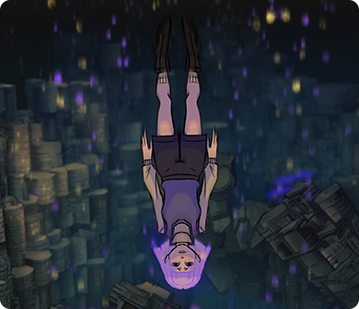

GAME DESIGN / SOUND DESIGN
Timothy
Darcy.
Game Designer & Sound Designer
Designing playful, meaningful and immersive game experiences.
View projects


01 / THE WORK
5 PROJECTSSelected projects.

02 / THE PERSON
About Timothy.
HELLO, I'M TIMOTHY
I’m a game designer working across technical prototyping, research and sound design. I love finding ways to make a game feel as good to play as it does to hear.
I work with Unity, FMOD, FL Studio and Ableton, and enjoy testing ideas with the people who will actually play them.